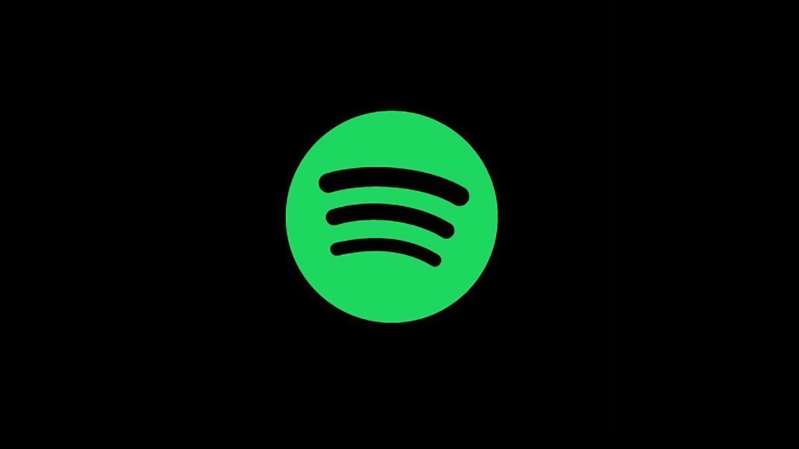
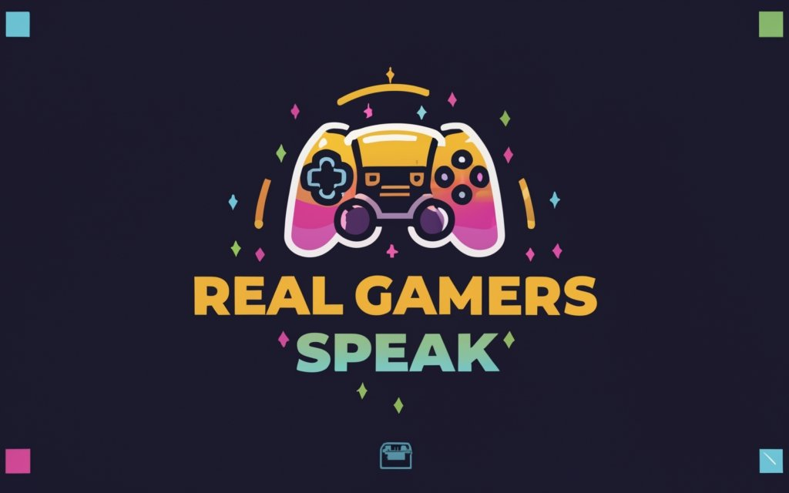

Reviews
**The Washington Post**
In a crowded arena of gaming podcasts, “Real Gamers Speak” emerges as a refreshing and engaging listen. This podcast, hosted by a trio of passionate gaming enthusiasts, dives deep into the heart of gaming culture, offering listeners an insightful mix of commentary, interviews, and industry news.
IGN
Real Gamers Speak has rapidly emerged as a notable podcast in the gaming community, and it's easy to see why. With a lively mix of humor, insightful commentary, and genuine passion for gaming, this podcast resonates with both casual gamers and hardcore enthusiasts alike.
Rating: ★★★★☆
Real Gamers Speak is a fantastic addition to the gaming podcast landscape, offering insights that appeal to both casual gamers and hardcore enthusiasts alike. The hosts exhibit a genuine passion for gaming, and their discussions are both engaging and informative. Each episode dives into various gaming topics, from the latest releases and industry news to deeper discussions about game design and player experience.
If you're looking for a podcast that dives deep into the gaming world with authenticity and passion, "Real Gamers Speak" is a fantastic choice. This podcast does an excellent job of blending insightful commentary with engaging discussions about the latest games, industry trends, and gaming culture as a whole.
* These are fake reviews, Wanted to give the site flavor *

We Up On Spotify
Posted on 1/26/2025
We got the podcast channel up on Spotify and currently working to get it up on Apple Podcast.

Purpose of Podcast
Posted on 1/26/2025
I wanted to create a safe haven for gamers to give unbiased and honest opinions about video games without the influence of publishers.